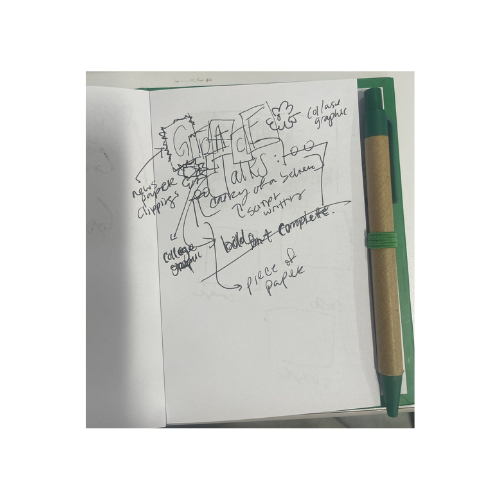

The Podcast Diary
Role: Design Consultant
Team: Jalen Phillips (solo)
Role: Design Consultant
Team: Jalen Phillips (solo)

Grace Talks: Diary of a Believer is a podcast that explores the joys and challenges of everyday life from a faith-based perspective. Blending elements of Bible study with personal reflections, it offers listeners intimate insights drawn from the host's own experiences. The creator envisions the podcast evolving into a vibrant community where individuals can connect, engage, and share their journeys.
The concept for the cover was to resemble a diary or journal entry, featuring script-style handwriting to evoke a sense of intimacy, as if she had written it herself. The design also called for a fun, nostalgic collage to appeal to younger audiences, with pink as a key color. Using these guidelines, I created a simple sketch of the potential cover, and once the host approved it, I moved on to developing wireframes. 
The design process began with the idea of capturing the essence of a personal diary through handwritten script and collage elements. I incorporated paper pages, using newspaper clippings and a piece of paper to highlight the collage concept while ensuring the script remained clear. The bold title anchored the design, with "Grace" collaged using the newspaper clippings, and "Talk" in bold pink letters to meet the color requirements and balance the collage effect. To add a nostalgic, playful vibe for younger audiences, I incorporated picture frames of the host, tying her personal memories to the show's themes. Final touches like doodles and cut-out flowers were added to mimic a genuine diary entry, enhancing both the intimacy and visual appeal.